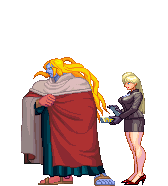
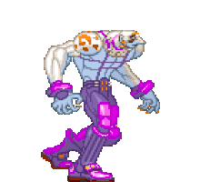
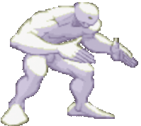
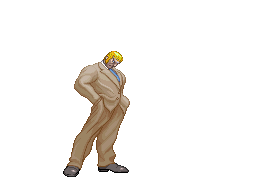

Street Fighter nació en agosto de 1987 y fue el primer juego de lucha en el que los aficionados podían elegir a su personaje.
¿Se imagina enfrentarse a los mejores maestros de las distintas artes marciales en una serie de combates callejeros alrededor del mundo?
ues de eso trata street figther.
Este modo continúa con la tradición de la saga de ser un líder del género, con un sistema de combate muy pulido y con sorprendentes novedades que lo han convertido en la cúspide de los juegos de lucha.
Todos los modos de juego disponibles en Street Fighter V se pueden encontrar en el Fighting Ground.

La tier list nos ayuda tener una idea mas o menos de los niveles de los personajes del juego,
cuales son los persones mas usados o con mas probabilidad de victoria.
Las tier list son creadas por las comunidades de jugadores en base a los torneos que se juegan de manera profesional
o tambien de la cantidad de victoria que tenga los personajes en base a sus cualidades tanto ofensivas como defensivas.
En este juego tenemos ataques de cercana y lejana distancia, en base a estos atques podemos calificar los personajes
y que tan efectivos sean en el juego.
La historia interna del juego nos cuenta sobre un torneo donde los mejores peleadores del mundo se enfrentan,
para que, el ganador del torneo pelee contra gill que es jefe final del videojuego.
Adentro de este videojuego se nos presenta un mundo donde los iluminati dirigidos por Gill quieren "limpiar"
el mundo de una forma poco etica. Nuestra dever dentro del juego es escoger un personaje para luchar en el torneo
y enfrentarnos al jefe final "GILL" si logramos derrotarlo se desbloqueara una animacion unica dependiendo
de nuestra seleccion de personajes.

Dentro del juego podemos ver varias historias como la amistad entre Ken y RYU, dos viejos amigos que compiten en
en el torneo, Ken al enterarse que su viejo amigo RYU entra al torneo se inscribe para poder tener un enfrentamiento
epico digno de este gran torneo.
RYU y Ken tiene un estilo de pelea muy parecido con habilidades muy similares Ken enfocandose un poco mas
en sus golpes con las piernas; estos dos son personajes son muy utilizados en los torneos mundiales
encontrandose muy altos en la tier list.

Tambien podemos ver historias como la de TWELVE un experimento Ruso, un soldado con capacidades sobrenaturales
puede combertir sus extremidades en armas de corto alcance como hachas, dagadas, espadas, etc..
Este invento ruso es una maquina de guerra con el proposito de matar a un error ruso, un soldado llamado
Necro el primer intento de soldado super humano. Necro al ser un intento fallido seria eliminado pero
logro escapar de las manos rusas y ahora es la presa de TWELVE.


Urien el hermano menor de GILL con habilidades unicas como el control del fuego y la materia es un personaje
muy usado por los jugadores, su historia nos cuenta como entra al torneo para intentar vencer a su hermano
y quedar como jefe y cabeza de los iluminati.
Este personaje tiene ataques muy parecidos a los de gill pero con un poco de menos fuerza, el cambio real esta
en sus habilidades especiales donde urien manipula la materia o se avalnasa de manera agresiva hacia el oponente
mientra que las abilidades de gill se enfoncan mas en atacar a distancia con un daño execibo y letal.
Estas son algunas de las historias dentro del mundo creado por CapCom cradores del videojuego de STREET FIGHTER